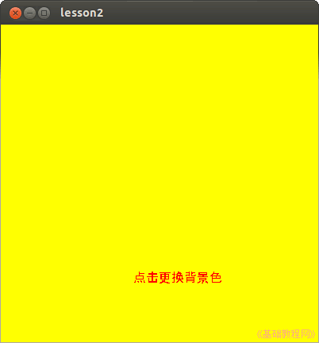

2014-2015 第一学期九年级程序设计教学设计
作者：TeliuTe 来源：基础教程网
二、学会设置属性 返回目录 下一课
（一）教学设计
1、学习目标：
2、注意事项：绕过弯来，既不要跳也不要落，一楼过了二楼
3、教学过程：
1）教师准备学案和板书；
2）学生整队进入，开机抄黑板上笔记；
3）教师讲解板书演示操作；
4）学生打指法、日志、完成操作；
5）教师打勾记录学生指法成绩，检查日志和操作；
注：学生抄完笔记就开始打指法、日志，老师讲完后再继续完成；
（二）板书设计(学生笔记)
教学9-2 2014年09月16日 星期二 13:21
第2课 学会设置属性
1、在9-3新建lesson2，再新建工程
2、点菜单“工具、首选项”，编辑者20
3、编辑者，显示行号，是
4、事件MouseDown，输fmain.background=&ff0000&
--日志--
02学会设置属性
1.软件由界面和代码组成
2.界面是肉眼可见，代码控制属性
3.点右键“事件，MouseDown”
4.fmain.background=&ff0000&
操作图示：

（三）课后记
--
3班前面七年级军训汇报，耽误了10分钟的样子，
讲的时候讲了两个单击、双击，就两个学生做完了
--
4班来了强调打字不要费时间，一遍就过，精力放在知识上编程上
讲的时候举两个两个例子，做制作单击就可以了，基本都做完了
--
下午1班也还可以，要求指法只是练习，不要干扰学习
把编程的意义说了一些，不过说着说着没词语了，培养逻辑思维能力
--
学生做的很快，只需做一个单击的，单词都是学过的很熟悉的
分清楚界面和代码，一个是界面设置颜色，另一个是用代码来设置
--
实际上后面时间还很多，但是如果完成两个内容，就会出现问题
一个任务刚好，另一个只是举例，把代码写在中间，删除的时候选中了删，别一下删错了
--
删错了，撤销一下，右键里有个撤销，保存用编辑器窗口的最好，工具栏上有两个容易混淆
编辑器翻译成了编辑者，这个不知是在哪儿翻译的，改一下也好了
--
颜色是rgb，简单描述一下，输完会变红，还以为是错了，后面发现就是这样
有些把代码写到open里去了，估计是从双击进去的，不是从事件
--
颜色举例用黄色，单击变红，双击变绿
选颜色的“剩余”翻译也有问题，用“其他”比较好
返回目录 下一课
本教程由86团学校TeliuTe制作|著作权所有
基础教程网：http://teliute.org/
美丽的校园……
转载和引用本站内容，请保留作者和本站链接。